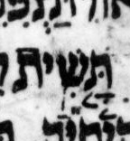

{kind=link}

| תָּ֤שִׁ֥ית
(?) תָּ֤שִֽׁית |
14:13 | מרכא not געיה in μL, maybe, says WLC but not BHQ |
I find WLC’s transcription far-fetched. Note that the consensus has a rare and hard-to-understand phenomenon called “secondary מהפך” by Breuer. It may seem weird that in the consensus, געיה immediately follows the מהפך, but this is actually expected (or at least “allowed”) if the מהפך is secondary, as it is here, according to Breuer.
The consensus word תָּ֤שִֽׁית may be easier to understand if one considers it and לִ֖י (the next word) to form a compound word whose מקף is, somewhat inexplicably, left implicit. If the מקף were made explicit, the compound would be written as תָּ֤שִֽׁית־לִ֖י and indeed that is the way that word is written (albeit with the מקף colored gray) in some editions of MAM (מקרא על פי המסורה). This and a handful of analogous cases are listed here, with the implicit מקף represented as a tilde (~).
See Breuer CoS sections 11.66.rn1 and 11.79. (CoS = The Cantillation of Scripture; rn = Roman numeral.) (Note that an English translation of CoS is now available, a great boon to students of cantillation who cannot easily read the original in its modern Hebrew.)
In my opinion, BHQ benefits from ignoring WLC here, though BHQ likely ignored WLC as a whole rather than considering and rejecting this particular change in WLC relative to BHS.
U — M — μL 401A col. 1 line -3 (3 counting from bottom of column)
μA (Aleppo) (page 273v, col 2, line 17, word 5):

μY (Cambridge 1753):
